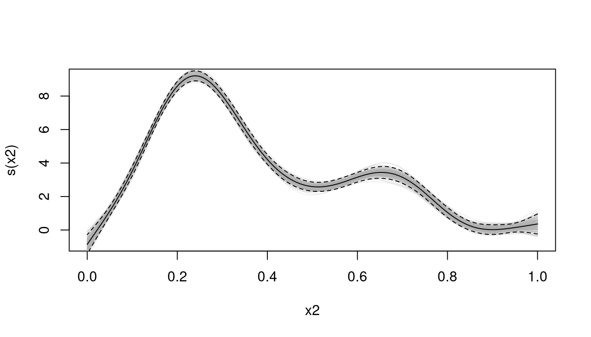
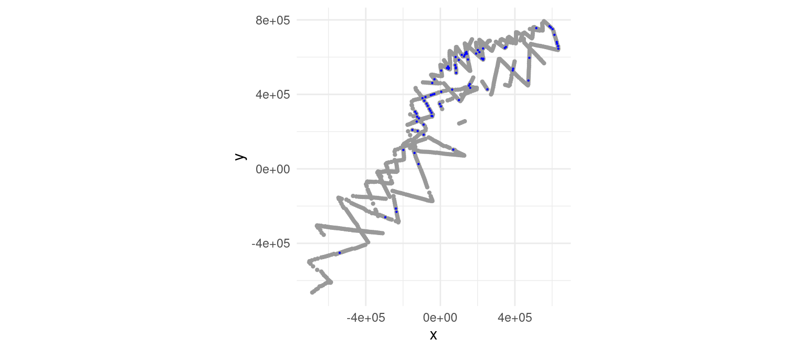
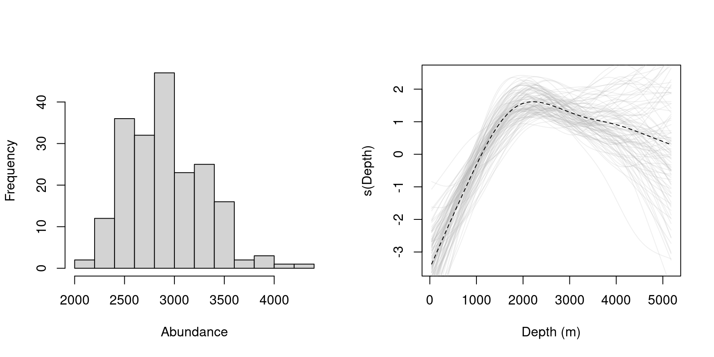

Model parameter uncertainty estimation approaches for generalized additive models
Author
David L Miller
Abstract
This document aims to clear up which approaches are appropriate for estimation of variance of the parameters (and dervied quantities from those parameters) of generalized additive models. Three approaches are discussed: analytic, posterior simulation and bootstrap.
Introduction
Here we assume we have a generalized additive model (GAM; Wood (2017)), which we have fitted by REML estimation (Wood, 2011) using the R package mgcv(Wood et al., 2016). Much of this is more general than that, but let’s stick to those bounds for now. If we model some response \(y\), as smooth functions of some covariates \(z_{k}\), with an offset of \(A\), our models often look something like: \[\begin{equation}
y_{i}=g^{-1}\left(g(A_{i})+\beta_{0}+\sum_{k}f_{k}(z_{ik})\right),\label{eq:gam}
\end{equation}\] where \(g\) is the link function (e.g., \(\log\)), \(A\) is an offset, \(y\) is the response (with some extended exponential family distribution), \(\beta_{0}\) is an intercept and the \(f_{k}\) are smooths of the explanatory covariates \(z_{k}\). The \(f_{k}\)s have basis-penalty form, so we can always write them as \[\begin{equation*}
f_{k}(z)=\sum_{j=1}^{J}\beta_{j}b_{j}(z),
\end{equation*}\] and each \(f_{k}\) is penalized by some (sum of) quadratic penalties, \(\sum_{m}\boldsymbol{\beta}^\text{T}\mathbf{S}_{m}\boldsymbol{\beta}\), whose influence is controlled by smoothing parameter(s) denoted by \(\lambda\) (or \(\boldsymbol{\lambda}\)).
An example of the model in (\(\ref{eq:gam}\)) would be a model where the response are counts, \(n_{i}\) at segments \(i=1,...,n_{\text{seg}}\) (which are, say, Tweedie distributed). Each segment has area \(A_{i}\) and an estimated probability of detection \(\hat{p}_{i}\) per segment (calculated using distance sampling methods). We then might have some covariates, say, space (\(\texttt{lat}_{i}\) and \(\texttt{lon}_{i}\)) and depth (\(\texttt{Depth}_{i}\)) measured at the segments which we smooth, Our model is then: \[\begin{equation}
n_{i}=\exp\left(\log_{e}A_{i}\hat{p}_{i}+\beta_{0}+f_{\text{space}}(\texttt{lat}_{i},\texttt{lon}_{i})+f_{\text{depth}}(\texttt{Depth}_{i})\right),\label{eq:dsm}
\end{equation}\] we might refer to this as a “density surface model” (Miller et al., 2013).
Once the model has been fitted we have estimates of the coefficients, \(\hat{\boldsymbol{\beta}}\), conditional on the data and smoothing parameters. Given the Bayesian interpretation of GAMs as fitted via REML in mgcv(Miller, 2019), we can think of \(\boldsymbol{\beta}\) as having posterior (conditional on the response and the smoothing parameters) such that \(\boldsymbol{\beta}\vert\boldsymbol{n},\boldsymbol{\lambda}\sim\text{MVN}(\hat{\boldsymbol{\beta}},\boldsymbol{V}_{\hat{\boldsymbol{\beta}}})\). Here \(\boldsymbol{V}_{\hat{\boldsymbol{\beta}}}\) is the variance-covariance matrix of the \(\boldsymbol{\beta}\)s, which is calculated from the data, smoothing parameters and penalty matrices (generally, \(\boldsymbol{V}_{\hat{\boldsymbol{\beta}}}=(\boldsymbol{X}^\text{T}\boldsymbol{W}\boldsymbol{X}+\boldsymbol{S}_{\lambda})^{-1}\phi\), where \(\boldsymbol{S}_{\lambda}\) is the penalty matrix for the whole model with the smoothing parameters absorbed). Here we are going to ignore variance in the smoothing parameters, though see discussion for a general approach to deal with this issue.
Making predictions with a GAM
We are not usually interested in the variance of the coefficients (\(\boldsymbol{\beta}\)) themselves, but rather some derived quantity like predictions or summary statistics of predictions. We want to evaluate (\(\ref{eq:dsm}\)) at (new) values of the covariates such that:
\[\begin{equation}
n_{m}^{*}=\exp\left(\log_{e}A_{m}+\beta_{0}+f_{\text{space}}(\texttt{lat}_{m},\texttt{lon}_{m})+f_{\text{depth}}(\texttt{Depth}_{m})\right),\label{eq:dsm-1}
\end{equation}\] In “Practical examples” below, I’ll show some examples for count data, where the quantity of interest is abundance over some region: sums of predictions over some grid.
Before going into variance estimation, we first recap how predictions are formed in GAMs. We have estimated \(\hat{\boldsymbol{\beta}}\) and want to make predictions at some new data locations. Prediction is usually explained as “plugging-in” the new covariate values into equation (\(\ref{eq:gam}\)) (or (\(\ref{eq:dsm}\))). This is true, but doesn’t fully explain what’s going on. When we build our model, we form a design matrix (\(\mathbf{X}\)), the rows of which correspond to observations and the columns correspond to the basis functions of the smooths (or just the covariates in the case of a GLM). To make a prediction we need to do the same thing again for these (\(M\)) new prediction locations, so we form \(\mathbf{X}_{p}\), the (Wood, 2017), which will look something like: \[
\mathbf{X}_{p}=\left(\begin{array}{ccccccc}
1 & b_{\texttt{a},1}(x_{\texttt{a},1}) & b_{\texttt{a},2}(x_{\texttt{a},1}) & \dotsc & b_{\texttt{b},1}(x_{\texttt{b},1}) & b_{\texttt{b},2}(x_{\texttt{b},1}) & \dotsc\\
1 & b_{\texttt{a},1}(x_{\texttt{a},2}) & b_{\texttt{a},2}(x_{\texttt{a},2}) & \dotsc & b_{\texttt{b},1}(x_{\texttt{b},2}) & b_{\texttt{b},2}(x_{\texttt{b},2}) & \dotsc\\
\vdots & \vdots & \vdots & \vdots & \vdots & \vdots & \vdots\\
1 & b_{\texttt{a},1}(x_{\texttt{a},M}) & b_{\texttt{a},1}(x_{\texttt{a},M}) & \dotsc & b_{\texttt{b},1}(x_{\texttt{b},M}) & b_{\texttt{b},1}(x_{\texttt{b},M}) & \dotsc
\end{array}\right),
\] where the first column of 1s is for the intercept term and \(b_{\texttt{a},j}(x_{\texttt{a},m})\) is the evaluation of the \(j\)th basis function for covarite \(\texttt{a}\), measured as \(x_{\texttt{a},i}\) for prediction point \(i\). Mutliplying \(\mathbf{X}_{p}\) by the estimated model coefficients (\(\hat{\boldsymbol{\beta}}\)), we get the linear predictor \(\boldsymbol{\eta}=\mathbf{X}_{p}\hat{\boldsymbol{\beta}}\). We then need to apply the (inverse) link function (\(g^{-1}\)) to the linear predictor to get predictions on the correct scale (\(\mathbf{y}=g^{-1}\left(\boldsymbol{\eta}\right)=g^{-1}\left(\mathbf{X}_{p}\hat{\boldsymbol{\beta}}\right)\)). We often want to summarize the resulting predictions, for example by summing them, so we calculate \(y^{*}=\sum_{m=1}^{M}y_{m}\). We could also write this in matrix notation as \(y^{*}=\mathbf{1}g^{-1}\left(\mathbf{X}_{p}\hat{\boldsymbol{\beta}}\right)\) where \(\mathbf{1}\) is a row-vector of 1s the same length as \(\textbf{y}\). \(\mathbf{X}_{p}\) is sometimes known as the “projection matrix” or “\(\mathbf{L}_{p}\) matrix”. It maps the estimated coefficients to the predicted values (on the link scale). Thinking of \(\mathbf{X}_{p}\) as a way to move between the coefficients and derived model quantities (like predictions) is key to understanding how variance can be estimated in the cases below.
A simple example shows how this works in mgcv:
library(mgcv)
Loading required package: nlme
This is mgcv 1.9-1. For overview type 'help("mgcv-package")'.
## simulate some data...set.seed(2)dat <-gamSim(1,n=400,dist="normal",scale=2)
Gu & Wahba 4 term additive model
# fit a modelb <-gam(y~s(x0),data=dat)# prediction matrixpred <-data.frame(x0 =seq(0, 1, length.out=100))# build the Xp matrixXp <-predict(b, pred, type="lpmatrix")# compare "manual" generation of predictions to those from predict()manual <- Xp %*%coef(b)auto <-predict(b, pred)# need to convert auto to be a matrixidentical(manual, as.matrix(auto))
[1] TRUE
Approaches to estimating variance
As covered above, we know what the variance of the estimated model coefficients is (and we denote that \(\boldsymbol{V}_{\hat{\boldsymbol{\beta}}}\)). Analogous to the case of the predictions above, we don’t care about the estimated parameters themselves, but want to know properties of the predictions. There are three options for estimating variance of the predictions for GAMs:
Analytic estimation via standard linear model theory.
Posterior simulation via the Bayesian interpretation of the model and distributional results.
Non-parametric bootstrapping via resampling ideas.
The next three sections address these approaches in turn.
Analytic estimation
Once we have fitted our model, we have not only the coefficients \(\hat{\boldsymbol{\beta}}\), but also a posterior covariance matrix of those coefficients, \(\boldsymbol{V}_{\hat{\boldsymbol{\beta}}}\). What we’d really like is the variance of our linear predictor (\(\boldsymbol{\eta}=\mathbf{X}\boldsymbol{\beta}\)) or some function of the linear predictor (\(h(\boldsymbol{\eta})=h(\mathbf{X}\boldsymbol{\beta}\))). By the delta method (e.g., (Wasserman, 2004) or (Seber, 1987)), we know that we can calculate the variance of some function of the linear predictor as: \[\begin{align}
\text{Var}[h(\boldsymbol{\eta})] & =\left(\frac{\partial h(\boldsymbol{\eta})}{\partial\boldsymbol{\beta}}\Bigg\vert_{\boldsymbol{\beta}=\boldsymbol{\hat{\beta}}}\right)^\text{T}\text{Var}(\boldsymbol{\beta})\left(\frac{\partial h(\boldsymbol{\eta})}{\partial\boldsymbol{\beta}}\Bigg\vert_{\boldsymbol{\beta}=\boldsymbol{\hat{\beta}}}\right)\\
& =\left(\frac{\partial h(\boldsymbol{\eta})}{\partial\boldsymbol{\beta}}\Bigg\vert_{\boldsymbol{\beta}=\boldsymbol{\hat{\beta}}}\right)^\text{T}\boldsymbol{V}_{\hat{\boldsymbol{\beta}}}\left(\frac{\partial h(\boldsymbol{\eta})}{\partial\boldsymbol{\beta}}\Bigg\vert_{\boldsymbol{\beta}=\boldsymbol{\hat{\beta}}}\right), \label{eq:delta-general}
\end{align}\] where the derivative terms are the derivatives of \(h(\boldsymbol{\eta})\) with respect to the model parameters (\(\boldsymbol{\beta}\)) evaluated at their estimates. Intuitively we can think of this expression as rotating and rescaling the variance-covariance matrix of the mode l parameters first to the scale of the linear predictor and then into the space of \(h\)().
Following on with our density surface example, if we wanted the variance of each prediction, in that case we think of the function \(h\) as just the link function \(h(\boldsymbol{\eta})=g(\boldsymbol{\eta})\). If we use a Tweedie for the response and therefore a \(\log_{e}\) link, we have that \(h(\hat{\boldsymbol{\eta}})=\text{exp}(\hat{\boldsymbol{\eta}})=\hat{\mathbf{n}}\) (if we start thinking in terms of the estimated model and \(\hat{\mathbf{n}}\) is a vector of estimated abundances). So we can then calculate: \[\begin{align}
\text{Var}(\hat{\mathbf{n}}) & =\left(\frac{\partial\mathbf{n}}{\partial\boldsymbol{\beta}}\Bigg\vert_{\boldsymbol{\beta}=\boldsymbol{\hat{\beta}}}\right)^\text{T}\boldsymbol{V}_{\hat{\boldsymbol{\beta}}}\left(\frac{\partial\mathbf{n}}{\partial\boldsymbol{\beta}}\Bigg\vert_{\boldsymbol{\beta}=\boldsymbol{\hat{\beta}}}\right),\label{eq:delta-varn}
\end{align}\] here we rescaling the variance-covariance of \(\hat{\boldsymbol{\beta}}\) to be that of the estimated counts. In this case \(\text{Var}(\hat{\mathbf{n}})\) would be a vector of variances about the predictions (when calling predict(model, se.fit=TRUE, type=''response'') in mgcv, the $se.fit terms are \(\sqrt{\text{Var}(\hat{\mathbf{n}})}\)(Wood, 2017)) .
In our density surface model example, we might really want to know about \(\hat{N}=\sum\hat{N}_{i}\) where \(\hat{N}_{i}\) are predicted abundances over some grid and we wish to know the total abundance \(\hat{N}\) and its variance \(\text{Var}(\hat{N})\):
\[\begin{align}
\text{Var}(\hat{N}) & =\left(\frac{\partial\hat{N}}{\partial\boldsymbol{\beta}}\Bigg\vert_{\boldsymbol{\beta}=\boldsymbol{\hat{\beta}}}\right)^\text{T}\boldsymbol{V}_{\hat{\boldsymbol{\beta}}}\left(\frac{\partial\hat{N}}{\partial\boldsymbol{\beta}}\Bigg\vert_{\boldsymbol{\beta}=\boldsymbol{\hat{\beta}}}\right),\label{eq:delta-varNhat}
\end{align}\] where we expand out \(\hat{N}=\sum\hat{N}_{i}=\mathbf{A}g^{-1}\left(\mathbf{X}_{p}\hat{\boldsymbol{\beta}}\right)\) to take the derivative where \(\mathbf{A}\) is a row vector of prediction grid cell areas. Since we usually use a \(\log\)-link, we end up with \(g^{-1}(x)=\exp(x)\), so: \[\begin{align*}
\frac{\partial\hat{N}}{\partial\boldsymbol{\beta}}\Bigg\vert_{\boldsymbol{\beta}=\boldsymbol{\hat{\beta}}} & =\frac{\partial}{\partial\boldsymbol{\beta}}\left[\mathbf{A}\exp\left(\mathbf{X}_{p}\boldsymbol{\beta}\right)\right]\\
& =\mathbf{A}\left(\exp\left(\mathbf{X}_{p}\hat{\boldsymbol{\beta}}\right)\odot\mathbf{X}_{p}\right),
\end{align*}\] where \(\odot\) indicates element-wise multiplication (so the \(i,j\)th entry in \(\exp\left(\mathbf{X}_{p}\hat{\boldsymbol{\beta}}\right)\odot\mathbf{X}_{p}\) is \(\exp\left(\left[\mathbf{X}_{p}\right]_{.,j}\hat{\boldsymbol{\beta}}\right)\left[\mathbf{X}_{p}\right]_{ij}\), where \(\left[\right]_{ij}\) denotes the \(i,j\)th entry of a matrix). So, our final (messy) expression is: \[
\begin{align}
\text{Var}(\hat{N}) & =\left(\mathbf{A}\left(\exp\left(\mathbf{X}_{p}\hat{\boldsymbol{\beta}}\right)\odot\mathbf{X}_{p}\right)\right)^\text{T}\boldsymbol{V}_{\hat{\boldsymbol{\beta}}}\left(\mathbf{A}\left(\exp\left(\mathbf{X}_{p}\hat{\boldsymbol{\beta}}\right)\odot\mathbf{X}_{p}\right)\right),\label{eq:delta-varNhat-1}
\end{align}
\] This is the method implemented in dsm::dsm.var.gam, dsm::dsm.var.prop and dsm::dsm_varprop. Note that we could instead calculate \(\frac{\partial\hat{N}}{\partial\boldsymbol{\beta}}\Bigg\vert_{\boldsymbol{\beta}=\boldsymbol{\hat{\beta}}}\) numerically by finite-differencing.
Posterior simulation
We can also use the fact that fitting a GAM in mgcv is an empirical Bayes procedure, so we have a posterior distribution for \(\hat{\boldsymbol{\beta}}\) given the smoothing parameter estimates, \(\hat{\boldsymbol{\lambda}}\), (as described above). As an example see Figure Figure 1 where posterior samples of \(\hat{\boldsymbol{\beta}}\) are used to construct multiple smooths, these smooths then follow the properties of the analytical estimates (based on Bayesian arguments by Marra and Wood (2012)). As can be seen from the plot, the generated grey curves mostly lie within the \(\pm2\) standard error dashed lines.

Figure 1: Fitted model (black lines) with confidence band (limits in dashed lines) generated from predict(..., se.fit=TRUE) along with 200 samples from the posterior of the model (grey).
We generate the grey curves by simply generating \(\boldsymbol{\beta}_{b}\sim N(\hat{\boldsymbol{\beta}},\mathbf{V}_{\hat{\boldsymbol{\beta}}})\), then multiplying by the prediction matrix (\(\mathbf{X}_{p}\)) to obtain predictions on the linear predictor scale (then applying the link function if necessary). This approach can be particularly handy in the case where we want to calculate the variance of some summary of the linear predictor values. This is particularly useful as the link function is often a non-linear function of the linear predictor, so the approximation in (\(\ref{eq:delta-general}\)) might not be appropriate.
As an alternative to (\(\ref{eq:delta-varNhat}\)), the following algorithm can be used:
For \(b=1,\ldots,B\):
Simulate from \(N(\hat{\boldsymbol{\beta}},\mathbf{V}_{\hat{\boldsymbol{\beta}}})\), to obtain \(\boldsymbol{\beta}_{b}\).
Calculate predicted abundance for this \(\boldsymbol{\beta}_{b}\), \(\hat{N}_{b}^{*}=\mathbf{1}g^{-1}\left(\mathbf{X}_{p}\boldsymbol{\beta}_{b}\right)\)
Store \(\hat{N}_{b}^{*}\).
Calculate the empirical variance or percentiles of the \(\hat{N}_{b}\)s.
In practice \(B\) does not have to be particularly large. (Marra et al., 2012) achieve reasonable results with \(B=100\).
Bootstrapping
A popular reply to the question of how to calculate uncertainty for complex models is “do a bootstrap”. What is meant by this is usually that one should resample the data with replacement, refitting models each time and calculating some summary statistic. This seems appealing but has been shown (Carlin and Gelfand, 1991; Laird and Louis, 1987) that the use of so-called “na�ve” bootstraps leads to underestimation of uncertainty. The issue stems from the fact that GAM terms are essentially structured random effects, which have priors on them. When data is resampled, the prior structure is ignored so the prior uncertainty is collapsed leaving only the sampling variation in the bootstrap resamples. (Bravington et al., 2018) show a simple simulated example of this happening. Simply put, the bootstrap makes the assumption that all possible distinct values of the covariates have been observed (Rubin, 1981).
Rasmus B��th gives a good explanation of a non-parametric bootstrap from a Bayesian point of view here: [http://www.sumsar.net/blog/2015/04/the-non-parametric-bootstrap-as-a-bayesian-model/].
It’s not impossible to concoct some kind of special bootstrap that could deal with this situation, what is sure is that this would require some careful thinking in each situation. The previous two methods just work.
Practical examples
To show these techniques, we can first fit models to the sperm whale line transect data from NOAA NEFSC/SEFSC cruises. The transects and observations are shown in Figure Figure 2.
First loading the data, fitting a detection function (to obtain \(\hat{p}\)), then fitting the spatial model:
library(dsm)library(Distance)# load sperm whale survey dataload("spermwhale.RData")# fit a detection functiondf <-ds(dist, truncation=5000, key="hn")# fit the GAMm <-dsm(count~s(x,y, k=40, bs="ts") +s(Depth, bs="ts"),ddf.obj=df, segment.data=segs,observation.data=obs, family=tw())# estimating abundanceNhat <-sum(predict(m, predgrid))
Models fitted by dsm are GAMs (the dsm function just calls gam, prior to that it’s just doing some data manipulation), so the techniques described above can be used for them, as well as for any GAM (though see Discussion for further extensions). Ignoring goodness-of-fit, model assessment and so forth for now, we can move on to making the calculations above in code.

Figure 2: Plot of the sperm whale data. Each grey dot indicates the location of the centroid of a transect approximately 10km square. Blue dots indicate locations where sperm whales were observed.
Analytic method
To make the analytic variance calculation given in (\(\ref{eq:delta-varNhat}\)), we need the ingredients for that: \(\hat{\boldsymbol{\beta}}\) (the estimated coefficients, \(\mathbf{X}_{p}\) (the prediction matrix) and \(\boldsymbol{V}_{\hat{\boldsymbol{\beta}}}\) (posterior variance-covariance matrix for \(\hat{\boldsymbol{\beta}}\)). These are obtained as follows:
# the coefficientsbetas <- m$coef# prediction matrixXp <-predict(m, predgrid, type="lpmatrix")# posterior variance-covariance for the betasVbeta <-vcov(m, unconditional=TRUE)
We can then simply write-out the mathematics:
# row vector of areasareas <-matrix(predgrid$off.set, nrow=1)# calculate the "bread" (either side of our matrix "sandwich")# calculate this in 2 bits...expxb <-diag(exp(Xp%*%betas)[,1], ncol=nrow(Xp), nrow=nrow(Xp))bread <- expxb %*% Xp# get the variance without the offsetV_analytic <- bread %*% Vbeta %*%t(bread)# multiply up by the offsetV_analytic <- areas %*% V_analytic %*%t(areas)# standard errorsqrt(V_analytic)
[,1]
[1,] 344.953
# CVsqrt(V_analytic)/Nhat
[,1]
[1,] 0.1316786
Posterior simulation
We can get to the same result by doing posterior simulation, using the variables betas, Xp and Vbeta from the above:
set.seed(211)# number of samplesnsamp <-200# storage for samplesres <-rep(0, nsamp)for (i in1:nsamp){# sample from the posterior of the model parameters br <-matrix(rmvn(1, betas, Vbeta))# make a prediction on the link scale pr <- Xp %*% br# offset and transform, storing in res res[i] <-sum(predgrid$off.set*exp(pr))}# can do this quickly in 2 lines as# br <- rmvn(nsamp, betas, Vbeta)# res <- colSums(predgrid$off.set * exp(Xp %*% t(br)))# calculate the standard errorsqrt(var(res))
[1] 393.0305
# CVsqrt(var(res))/Nhat
[1] 0.1500312
Note that here we see that the CV (and standard error) is a little larger than for the delta method. In part because of the link function making extreme values more extreme (but only in one direction). We could get around this by implementing some kind of importance (or Metropolis-Hastings) sampler, ensuring that more values are sampled near “realistic” values or simply by increasing nsamp. Since we are sampling from a multivariate normal, the procedure is relatively fast and we can afford to make nsamp relatively large. The likely bottleneck in the code is the matrix multiplication when the two line method is used.

Figure 3: Left: histogram of posterior samples of abundance for the sperm whale data. Right: posterior samples from the depth smooth.
Discussion
Above I’ve described three methods for estimating variance from GAMs, specifically with examples from spatial modelling of distance sampling data. It has been clear for some time that nonparametric bootstrap-based methods are not appropriate for models with random effects, but the alternatives have not been laid-out, especially for spatial data. Hopefully the examples here show how internal functions in dsm work, and how they can be implemented for those who don’t use that package.
For those dealing with DSMs, the above doesn’t directly address the issue of variance that comes from the detection function. Fortunately, including this source of uncertainty comes without too much additional effort. If we use the methods described in (Bravington et al., 2018), we can obtain a \(\boldsymbol{V}_{\hat{\boldsymbol{\beta}}}\) that includes detection function uncertainty. We can then use that \(\boldsymbol{V}_{\hat{\boldsymbol{\beta}}}\) in the procedures outlined above.
Acknowledgements
This work was originally funded by OPNAV N45 and the SURTASS LFA Settlement Agreement, and being managed by the U.S. Navy’s Living Marine Resources program under Contract No. N39430-17-C-1982.
References
Bravington, M. V., Miller, D. L. and Hedley, S. L. (2018) Reliable variance propagation for spatial density surface models., 11.
Carlin, B. P. and Gelfand, A. E. (1991) A sample reuse method for accurate parametric empirical Bayes confidence intervals. Journal of the Royal Statistical Society. Series B (Methodological), 189–200.
Laird, N. M. and Louis, T. A. (1987) Empirical BayesConfidenceIntervalsBased on BootstrapSamples. Journal of the American Statistical Association, 82, 739–750. DOI: 10.1080/01621459.1987.10478490.
Marra, G. and Wood, S. N. (2012) Coverage Properties of ConfidenceIntervals for GeneralizedAdditiveModelComponents: Coverage properties of GAM intervals. Scandinavian Journal of Statistics, 39, 53–74. DOI: 10.1111/j.1467-9469.2011.00760.x.
Marra, G., Miller, D. L. and Zanin, L. (2012) Modelling the spatiotemporal distribution of the incidence of resident foreign population: SpatiotemporalSmoothing of ResidentForeignPopulation. Statistica Neerlandica, 66, 133–160. DOI: 10.1111/j.1467-9574.2011.00500.x.
Miller, D. L. (2019) Bayesian views of generalized additive modelling. arXiv:1902.01330 [stat]. Available at: http://arxiv.org/abs/1902.01330 (accessed 23 May 2019).
Miller, D. L., Burt, M. L., Rexstad, E. A., et al. (2013) Spatial models for distance sampling data: Recent developments and future directions. ed. O. Gimenez Methods in Ecology and Evolution, 4, 1001–1010. DOI: 10.1111/2041-210X.12105.
Nychka, D. (1988) Bayesian ConfidenceIntervals for SmoothingSplines. Journal of the American Statistical Association, 83, 1134. DOI: 10.2307/2290146.
Rubin, D. (1981) The BayesianBootstrap. The Annals of Statistics, 9, 130–134.
Wasserman, L. (2004) All of Statistics: AConciseCourse in StatisticalInference. Springer Texts in Statistics. Springer.
Wood, S. N. (2011) Fast stable restricted maximum likelihood and marginal likelihood estimation of semiparametric generalized linear models. Journal of the Royal Statistical Society: Series B (Statistical Methodology), 73, 3–36.
Wood, S. N. (2017) Generalized AdditiveModels. AnIntroduction with R. 2nd ed. Texts in StatisticalScience. CRC Press.
Wood, S. N., Pya, N. and Säfken, B. (2016) Smoothing Parameter and ModelSelection for GeneralSmoothModels. Journal of the American Statistical Association, 111, 1548–1563. DOI: 10.1080/01621459.2016.1180986.